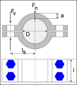
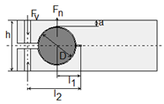

|
|
|


夹紧连接
夹紧连接仅用于传递低或中等扭矩（小波动）。
可以计算两种不同的夹紧连接配置：
对于剖分式轮毂，假设压力在整个接合面上均匀分布。压力可以是均匀表面压力、余弦形表面压力或线性接触。

建议使用尽可能窄的配合，以确保压力主要呈线性性质（因为轴毂也受到弯曲的影响）。计算是针对线性压力的最不利情况进行的。

注意
滑动和表面压力的安全性计算在文献中由Roloff Matek [80] 描述。弯曲的计算按照Decker [81] 的规定进行。
English Original
Clamped Connections
Clamped connections are only used to transfer low or medium torque (minor fluctuations).
There are two different configurations of clamped connections that can be calculated:
In the case of a split hub, it is assumed that pressure is distributed uniformly across the whole joint. The pressure can be uniform surface pressure, cosine-shaped surface pressure or linear contact.
We recommend you use as narrow a fit as possible, to ensure that the pressure is mostly of a linear nature (as hubs are also subject to bending). The calculation is performed for the least practical case of linear pressure.
Note
Calculations of safety against sliding and surface pressure are described in literature by Roloff Matek [80]. The calculation of bending is performed as specified by Decker [81].